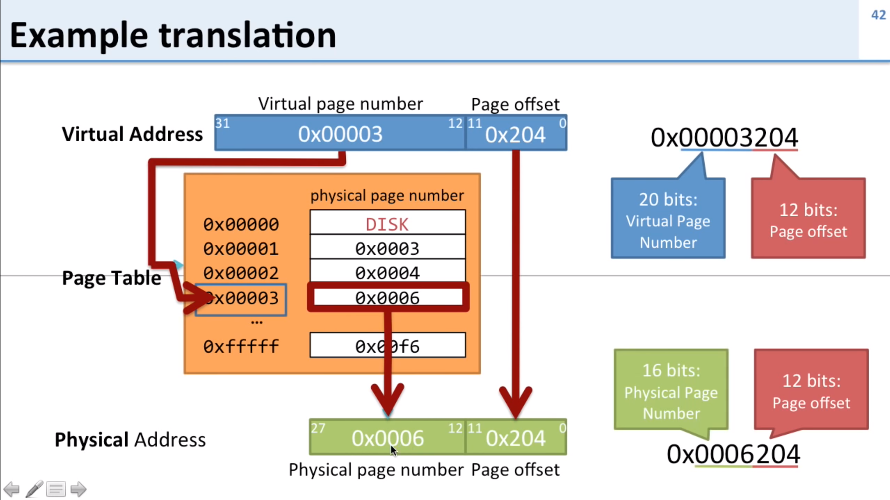

Pic from the video

There is a table (Process address space) between Process and Page table, if Process access Page Table directly, there will be no protection for the data of each memory, since each virtual address in Page table is corresponding to a physical address.
VM/RAM is divided to many Pages/Page frames - To reduce page table size
Page Size means the size of a Page which stores data (NOT Entries)!
Data in memory are byte addressible, which means each address stores a byte. A page whose size is 4096KB implys that there should be 4096K entries for every data (byte), therefore 12 bits for offset is needed.